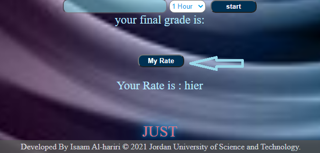

هنا في الخانة الأولى ندخل عدد ساعات الفصل المراد حساب المعدل له
هنا في الخانات التالية وعددها سبعة ندخل علامة المادة من 4.2 على سبيل المثال 3.5 وهكذا
أما بخصوص زر ستارت فلك حرية الاختيار حيث يظهر علامة المادة النهائية فقط
RATE أما هنا وبعد ادخال كافة التفاصيل السابقة سيظهر معدلك الفصلي عند الضغط على زر
